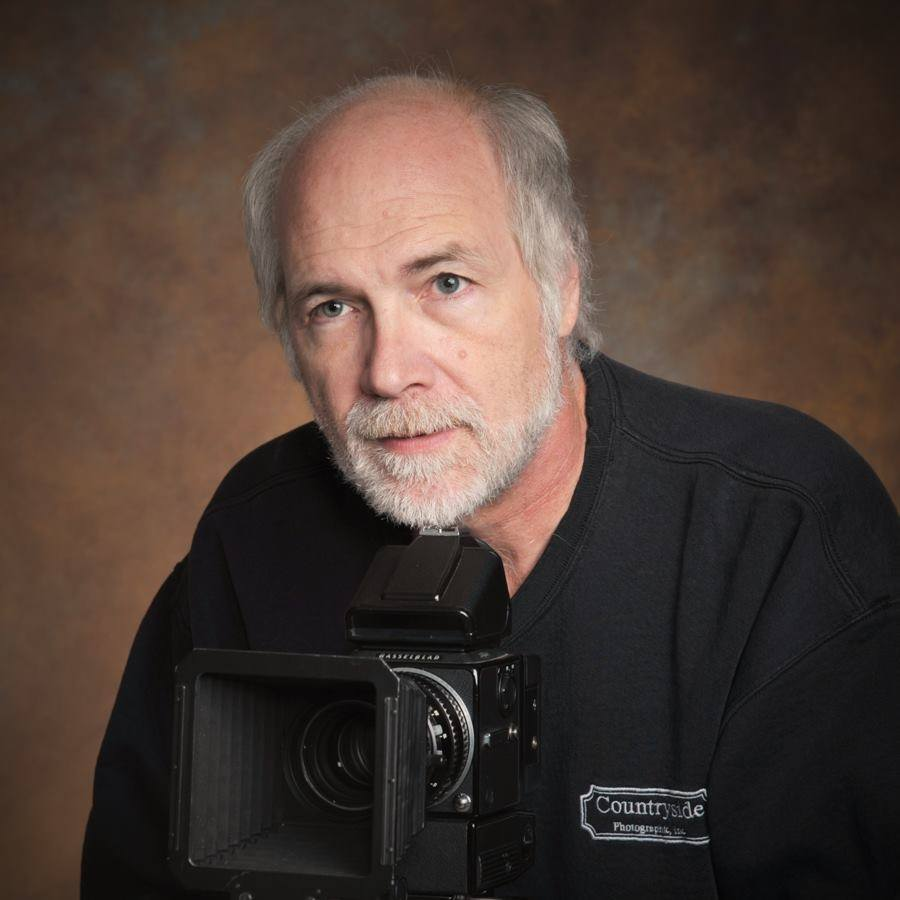

BRAD CORNELL
Countryside continues to be the preferred senior portrait photographer for the Stillwater SAHS seniors and other
schools from Prescott,WI, Oakdale, Mahtommedi to Blaine, MN.
In 2014 the Stillwater high school yearbook staff selected Countryside from many different studios in the area
to provide the yearbook with quality portraits while considering things like, image quality and variety,studio
location, print prices to name a few of the requirements. We continue to provide ongoing support for SAHS
yearbook with senior portraits, sporting events and team photos.
My love for the photographic media goes back to my high school days where I was the only yearbook photographer
student. Black and White was the normal film back in the 70s. I worked for two studios during high school
printing the yearbook portraits in the darkroom. After high school I began studying wedding and portrait
photography with three photographers that were masters of the trade.
My artistic drive molded me into portrait and wedding photographer. WOW! Weddings are all about people not just
about capturing a photograph or the equipment you use. The studio I worked for pushed me into the deep end of
the pool of wedding photography using only window light to capture portraits. This old style photography using
only the soft light of a window to create wonderful wedding portraits limits for a photographer, to mid-day
weddings in the summer. People get married in the morning, early evening and what about when it raining or
snowing. Well this taught me to be prepared, I use professional lighting for all my weddings. I mastered
portrait lighting 25 years ago allowing me to provide studio quality wedding photography regardless of location.
I opened Countryside Photo in 1985 and reduced my contract wedding work to only one studio while booking work
for myself.
Moving forward in time when my kids were in high school I stopped photographing wedding as the demand changed
and my desire photo expand my senior portraits family and pet photography. In 2010 I engaged with Stillwater
high school and began photographing sports action and team photos. 2011 we built the studio and now I am the
main photographer most of the sports and the yearbook photographer for more than 500 students sense 2014.
I truly enjoy photographing high school seniors, everyone of them has a "can do" attitude.
Portraits for Life.